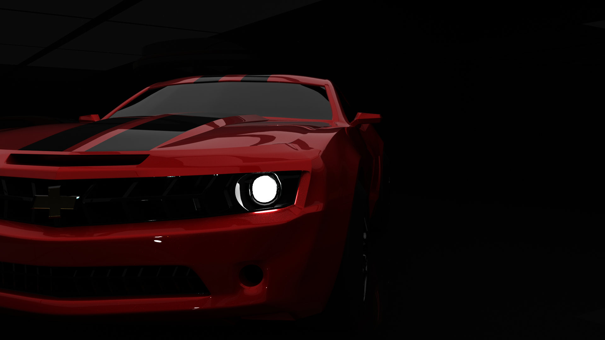
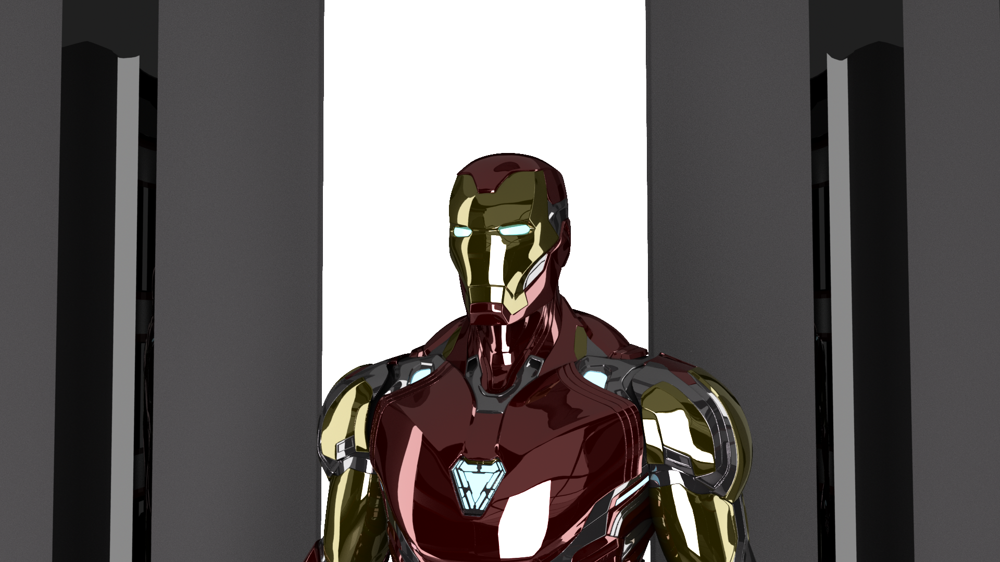

Actually This car was my first 3D modelled car in AutoDesk.And as the my first car, it took more time to model than my other cars. Then came texturing part of it, I kept it as much real as I could to the real Cheverlet Camaro 2005.
This is second most 3d Model Car Modelled by Me, Ford GT Mustang. And I love this car since I saw "Need For Speed" Movie. Well it didn't took that time as I had already got an idea of car modelling and I had got modelling experience many other things(Objects, Characters, etc).
Can't even guess how much time it took. Plus it's texturing was preety hard, and it mesh was too heavy to handle as my system was so crashing.
This is a graphical logo representation created by me. I created by me when i got my first intership at "Digital Ipsum" Co-orpration.